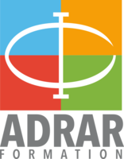

Adrar Pôle Numérique

La team #AdrarNumerique du pôle NUMERIQUE de l’ADRAR, vous propose des formations innovantes aux métiers & technologies du numérique accessibles – avec ou sans diplôme, avec ou sans expérience – dans les domaines du : Développement Web & Mobile (Toulouse, Montpellier & Tarbes), Support et Administration des Systèmes & Réseaux (Toulouse & Tarbes) Webdesign (Montpellier),